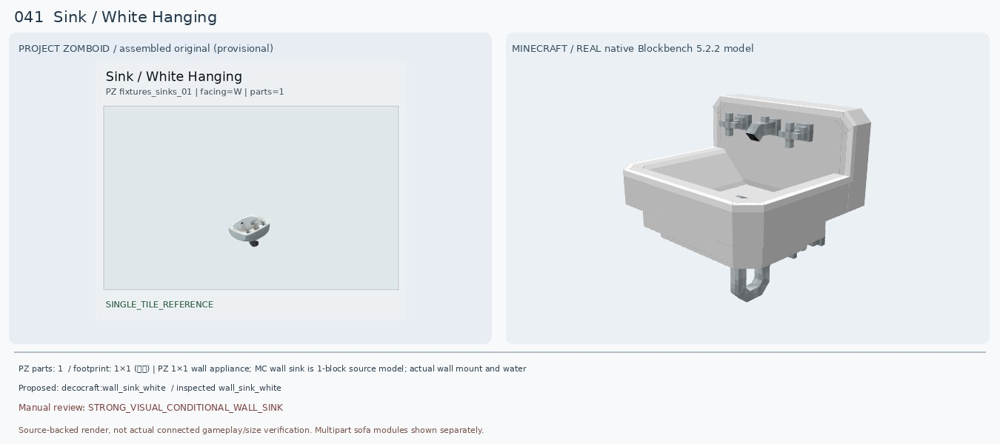
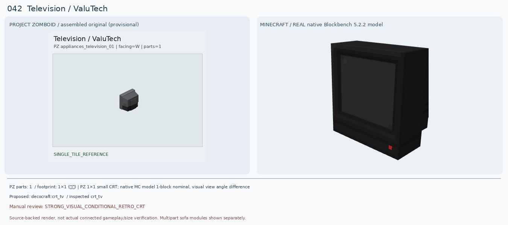
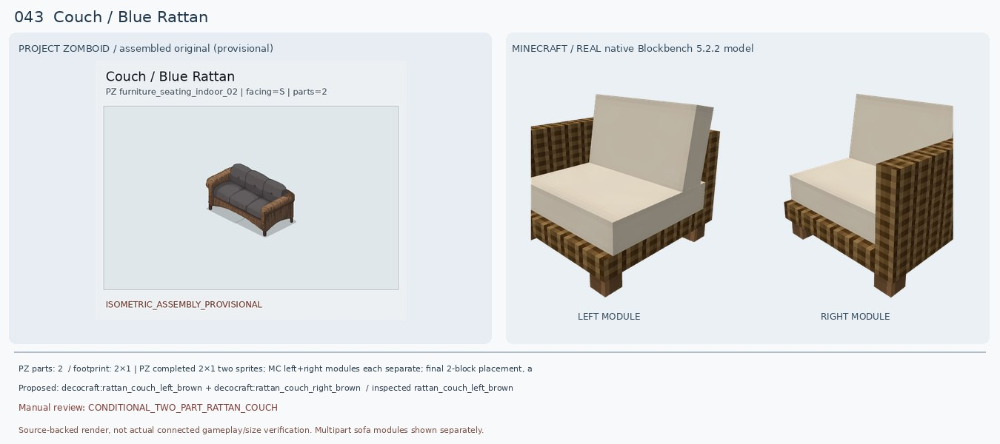
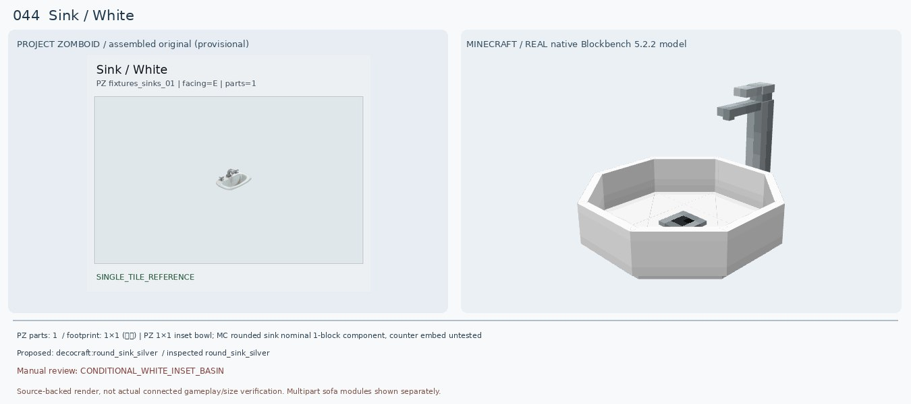
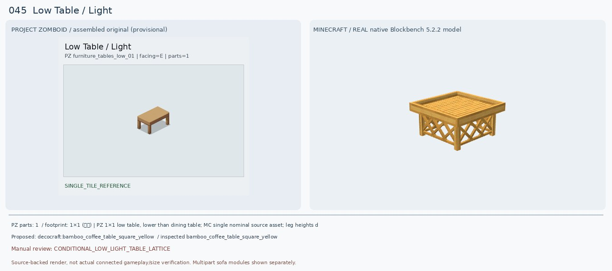
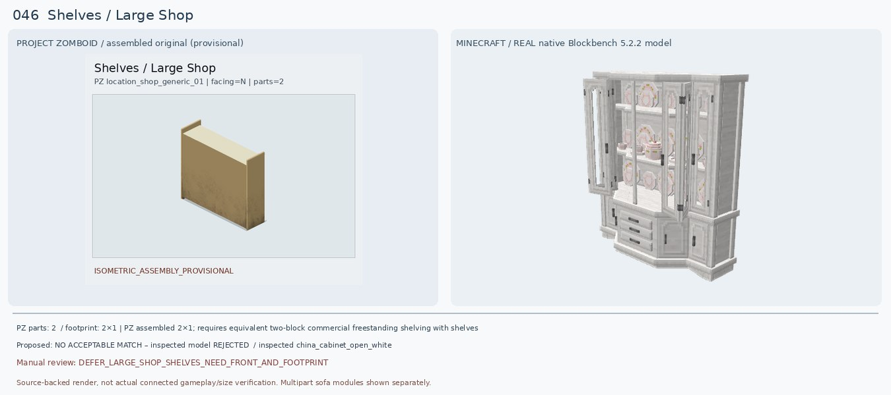
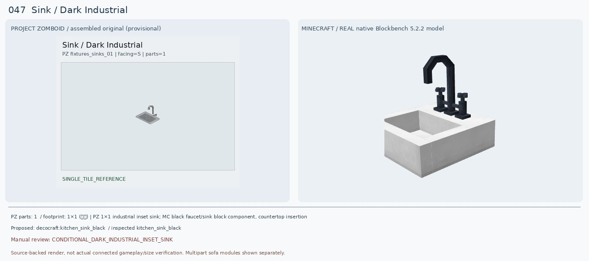
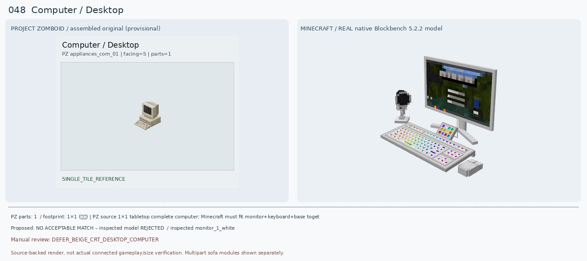
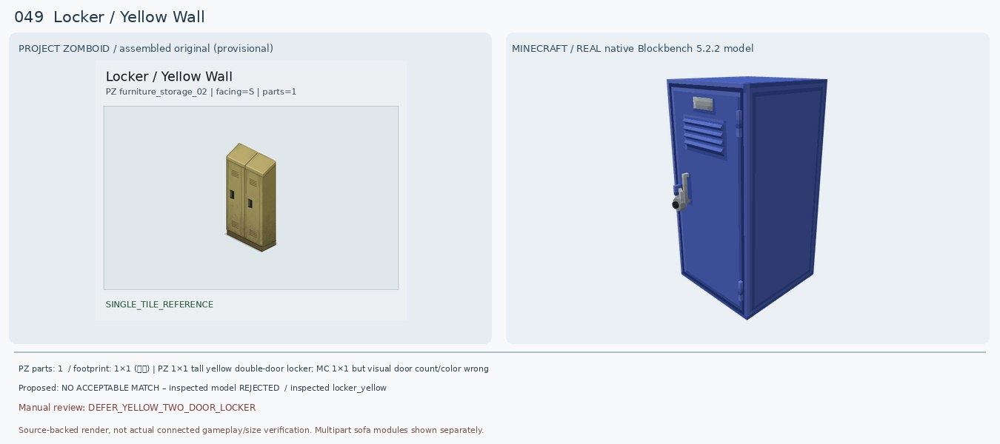
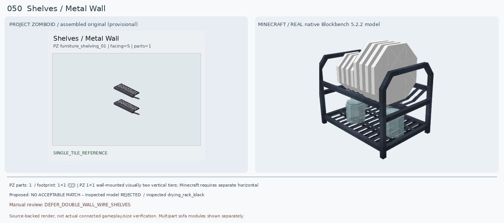

Sink / White Hanging
검수: STRONG_VISUAL_CONDITIONAL_WALL_SINK
실제 선정 후보: decocraft:wall_sink_white
실제로 렌더해 비교한 모델: decocraft:wall_sink_white
다른 후보: decocraft:round_sink_silver
크기: PZ 1×1 wall appliance; MC wall sink is 1-block source model; actual wall mount and water functions untested
원본 외형: White oval ceramic wall-hung basin, paired taps and visible exposed drain below; no stand
판정 이유: 좀보이드 원본은 흰색 벽걸이 세면대, 금속 수전 둘, 아래 배수구가 보임. 새 Decocraft Wall Sink White 실제 모델은 흰색 몸체/수전/아래 배수 파이프가 갖춰져 기존 Refurbished 분홍색 단일 평판보다 매우 적합. 다만 정사각형 볼과 높은 뒷판은 원본 둥근 도기와 비율 차이.
다음 조치: 벽 장착 위치·높이·배수관·게임 사용 기능 확인. 렌더를 1:1 외형 확정으로 오인 금지.
PZ 원본 메타데이터
{"BlocksPlacement": [""], "CanBreak": [""], "CanScrap": [""], "CustomName": ["Sink"], "Facing": ["W"], "GroupName": ["White Hanging"], "IsLow": [""], "IsMoveAble": [""], "IsSurfaceOffset": [""], "Material": ["Plumbing"], "Material2": ["Pipes"], "Material3": ["Sink"], "MoveType": ["WallObject"], "PickUpTool": ["Wrench"], "PickUpWeight": ["50"], "PlaceTool": ["Wrench"], "ScrapSize": ["Small"], "SinkType": ["Ceramic"], "Surface": ["32"], "attachedE": [""], "waterAmount": ["20"], "waterMaxAmount": ["20"], "waterPiped": [""]}
Television / ValuTech
검수: STRONG_VISUAL_CONDITIONAL_RETRO_CRT
실제 선정 후보: decocraft:crt_tv
실제로 렌더해 비교한 모델: decocraft:crt_tv
다른 후보: decocraft:tv_old
크기: PZ 1×1 small CRT; native MC model 1-block nominal, visual view angle difference
원본 외형: Compact dark gray/black CRT television with protruding deep rear casing, tabletop portable 1990s style
판정 이유: 원본 ValuTech TV는 두껍고 뒤로 튀어나온 검정/회색 브라운관 TV(원본 좌우 비교는 뒷면 시점). 새 Decocraft CRT TV는 검은색 두꺼운 박스형 모니터와 전면 화면을 갖추어 기존 Refurbished의 큐브형 그래픽보다 명확히 낫다. Tv Old는 나무 외장·안테나가 달려 시대와 외형이 다름.
다음 조치: TV 전면/뒷면 양방향 렌더와 실제 바닥/탁자 설치 높이, 신호 표시/작동 여부 확인.
PZ 원본 메타데이터
{"BlocksPlacement": [""], "CanScrap": [""], "CustomItem": ["Base.TvBlack"], "CustomName": ["Television"], "Facing": ["W"], "GroupName": ["ValuTech"], "IgnoreSurfaceSnap": [""], "IsMoveAble": [""], "IsSurfaceOffset": [""], "IsTableTop": [""], "IsoType": ["IsoTelevision"], "Material": ["Electric"], "MaterialType": ["Glass_Light"], "PickUpWeight": ["100"], "Surface": ["15"], "signal": ["tv"], "solidtrans": [""]}
Couch / Blue Rattan
검수: CONDITIONAL_TWO_PART_RATTAN_COUCH
실제 선정 후보: decocraft:rattan_couch_left_brown + decocraft:rattan_couch_right_brown
실제로 렌더해 비교한 모델: decocraft:rattan_couch_left_brown
다른 후보: decocraft:rattan_couch_center_brown
크기: PZ completed 2×1 two sprites; MC left+right modules each separate; final 2-block placement, adjacency and connection untested
원본 외형: Two-tile connected rattan wicker two-seat sofa: brown woven arms and frame with dark gray seat and bolster cushions
판정 이유: 기존 Macaw Blue Couch는 파란색 단일 블록/좌석이며 갈색 라탄 질감이 없어 전혀 맞지 않는다. 새 Decocraft Rattan Couch Brown 왼쪽·오른쪽 모델은 실제 원본 소스에서 등받이·라탄 옆면·다리·좌석을 각각 확인한 완전형 모듈이다. 하지만 쿠션은 크림색으로 원본의 짙은 회색과 색상이 어긋나며, 두 블록으로 붙인 조립 완성형은 아직 게임에서 확인하지 않았다. 카드에는 좌우 단독 모듈을 각각 보여준다.
다음 조치: PZ 2타일 완성 조립 재점검, 두 Decocraft 모듈을 실제 인접 배치한 최종 렌더 필요. 회색 쿠션 변형/리텍스처 검사; 2-seat 기능 확인.
PZ 원본 메타데이터
{"BedType": ["averageBed"], "BlocksPlacement": [""], "CanBreak": [""], "CanScrap": [""], "CustomName": ["Couch"], "Facing": ["S"], "GroupName": ["Blue Rattan"], "IsLow": [""], "IsMoveAble": [""], "Material": ["Wood"], "Material2": ["Nails"], "Material3": ["Fabric"], "MaterialType": ["Fabric"], "PickUpLevel": ["2"], "PickUpTool": ["Hammer"], "PickUpWeight": ["150"], "PlaceTool": ["Hammer"], "ScrapSize": ["Small"], "SeatMaterial": ["Fabric"], "SpriteGridPos": ["0,0", "1,0"], "Surface": ["17"], "bed": [""], "chairS": [""], "livingRoom": [""], "solidtrans": [""]}
Sink / White
검수: CONDITIONAL_WHITE_INSET_BASIN
실제 선정 후보: decocraft:round_sink_silver
실제로 렌더해 비교한 모델: decocraft:round_sink_silver
다른 후보: decocraft:square_sink_silver
크기: PZ 1×1 inset bowl; MC rounded sink nominal 1-block component, counter embed untested
원본 외형: Compact white oval ceramic inset basin with simple short double chrome taps, no tall backsplash
판정 이유: 원본은 얕고 둥근 흰색 매입형 도기 세면대에 짧은 금속 수도꼭지들이 있다. 새 Decocraft Round Sink Silver는 흰 둥근 물받이·수전이 비슷하지만 팔각형 볼, 긴 한 개 수전, 큰 받침/배수구가 달라 모양이 정확히 같지는 않다. 기존 Refurbished는 평판만 나온 불완전 모델이므로 교체.
다음 조치: 원본과 같은 짧은 두 손잡이 도기 세면대 모드 찾아 비교. 실제 수납장 안에 매립되는지 확인.
PZ 원본 메타데이터
{"CanBreak": [""], "CanScrap": [""], "CustomName": ["Sink"], "Facing": ["E"], "GroupName": ["White"], "IsMoveAble": [""], "IsSurfaceOffset": [""], "IsTableTop": [""], "Material": ["Plumbing"], "Material2": ["Pipes"], "Material3": ["Sink"], "PickUpTool": ["Wrench"], "PickUpWeight": ["50"], "PlaceTool": ["Wrench"], "ScrapSize": ["Small"], "SinkType": ["Ceramic"], "Surface": ["34"], "waterAmount": ["20"], "waterMaxAmount": ["20"], "waterPiped": [""]}
Low Table / Light
검수: CONDITIONAL_LOW_LIGHT_TABLE_LATTICE
실제 선정 후보: decocraft:bamboo_coffee_table_square_yellow
실제로 렌더해 비교한 모델: decocraft:bamboo_coffee_table_square_yellow
다른 후보: decocraft:cottage_coffee_table
크기: PZ 1×1 low table, lower than dining table; MC single nominal source asset; leg heights differ
원본 외형: Short light honey-brown square/slightly oblong coffee table with flat wooden top and four plain stout legs
판정 이유: 원본은 밝은 황갈색 매끈한 낮은 탁자와 굵은 네 다리. 새 Decocraft Bamboo Square Yellow는 비슷한 밝은 목재 상판·낮은 크기를 갖지만 옆면이 X자 라탄 격자라 원본의 열린 네 다리 구조와 다름. Cottage Coffee Table은 다리는 간결하지만 색상이 매우 어두워 보조 대안. 기존 Macaw는 회색 매끈한 석판처럼 나타나 부적합.
다음 조치: 마크 바닐라 참나무 덫문/얇은 상판+다리 조합, Re:Deco 밝은 커피테이블 실제 블록 렌더 및 설치 공간 확인.
PZ 원본 메타데이터
{"BlocksPlacement": [""], "CanScrap": [""], "CustomName": ["Low Table"], "Facing": ["E"], "GenericCraftingSurface": ["true"], "GroupName": ["Light"], "IsLow": [""], "IsMoveAble": [""], "IsTable": [""], "Material": ["Wood"], "Material2": ["Nails"], "PickUpWeight": ["50"], "ScrapSize": ["Small"], "Surface": ["15"], "solidtrans": [""]}
Shelves / Large Shop
검수: DEFER_LARGE_SHOP_SHELVES_NEED_FRONT_AND_FOOTPRINT
실제 선정 후보: 없음 — 후속 검토
실제로 렌더해 비교한 모델: decocraft:china_cabinet_open_white
다른 후보: Wan's Storage Shelves / shop shelving (model ID unverified)
크기: PZ assembled 2×1; requires equivalent two-block commercial freestanding shelving with shelves on other side
원본 외형: PZ 2×1 multi-tile tall beige/gold commercial store shelving; reference appears viewed from largely blank rear; true front not verified
판정 이유: 원본 2개 타일을 합친 상점 진열대인데 현재 그림은 넓고 매끈한 뒷판이 강조되어 실제 상품 진열 선반 쪽 전면이 불분명하다. 기존 Handcrafted Acacia Shelf는 폭 1칸 짜리 닫힌 목제 상자 같아 비율과 종류가 다름. 추가 Decocraft China Cabinet White도 문·접시·서랍이 있는 가정용 찬장으로 상점 전용 2칸 선반과 불일치. 원본 반대 시점 확인 전 확정 불가.
다음 조치: PZ 2개 타일 조립을 180° 회전해 전면 선반을 확인, Wan's Storage Shelves 모드의 2칸 모듈 원본 모델/길이 확인.
PZ 원본 메타데이터
{"BlocksPlacement": [""], "CanBreak": [""], "CanScrap": [""], "CustomName": ["Shelves"], "Facing": ["N"], "GroupName": ["Large Shop"], "IsMoveAble": [""], "ItemHeight": ["60"], "Material": ["Wood"], "Material2": ["Nails"], "PickUpLevel": ["1"], "PickUpTool": ["Hammer"], "PickUpWeight": ["100"], "PlaceTool": ["Hammer"], "SpriteGridPos": ["0,0", "1,0"], "container": ["shelves"], "solidtrans": [""]}
Sink / Dark Industrial
검수: CONDITIONAL_DARK_INDUSTRIAL_INSET_SINK
실제 선정 후보: decocraft:kitchen_sink_black
실제로 렌더해 비교한 모델: decocraft:kitchen_sink_black
다른 후보: decocraft:kitchen_sink_silver
크기: PZ 1×1 industrial inset sink; MC black faucet/sink block component, countertop insertion not tested
원본 외형: Narrow rectangular deep steel inset sink with dark gray rim, tall arched chrome faucet and short control
판정 이유: 원본 Dark Industrial Sink는 진회색 은색 철제 사각 볼, 높은 꺾인 수도꼭지. 새 Kitchen Sink Black은 사각 볼·높은 호형 수전·어두운 손잡이로 기존 Paladin 평판 모델보다 좋다. 다만 모델의 바닥 몸체가 흰색이며 수전 전체가 검게 바뀌어서 원본 금속 광택과 상충. Silver 변형과 색상 재비교 필요.
다음 조치: Metal bowl/rim darkness과 faucet chrome 차이를 원본 방향별 비교. 다른 카운터와 결합 설치 가능한지 확인.
PZ 원본 메타데이터
{"CanBreak": [""], "CanScrap": [""], "CustomName": ["Sink"], "Facing": ["S"], "GroupName": ["Dark Industrial"], "IsMoveAble": [""], "IsSurfaceOffset": [""], "IsTableTop": [""], "Material": ["Plumbing"], "Material2": ["Pipes"], "Material3": ["Sink"], "PickUpTool": ["Wrench"], "PickUpWeight": ["50"], "PlaceTool": ["Wrench"], "ScrapSize": ["Small"], "SinkType": ["Metal"], "Surface": ["34"], "waterAmount": ["20"], "waterMaxAmount": ["20"], "waterPiped": [""]}
Computer / Desktop
검수: DEFER_BEIGE_CRT_DESKTOP_COMPUTER
실제 선정 후보: 없음 — 후속 검토
실제로 렌더해 비교한 모델: decocraft:monitor_1_white
다른 후보: Noish's Furniture: Electronics / Retro Monitor + Keyboard; exact block ID and render unverified
크기: PZ source 1×1 tabletop complete computer; Minecraft must fit monitor+keyboard+base together, maybe composite
원본 외형: Complete 1990s beige desktop PC: thick CRT monitor, beige horizontal computer case beneath, separate light keyboard in front
판정 이유: PZ는 오래된 베이지색 CRT 모니터, 수평 케이스, 키보드가 모두 있는 완성 데스크톱. 기존 Refurbished Computer는 금색 큰 정육면체 한 부품만 렌더링되어 매칭 불가능. 새 Decocraft Monitor 1 White는 모니터와 키보드 형태가 있지만 화면이 얇은 현대식 LCD, 화려한 방송용 조작패널, 별도 CRT 몸체가 없어 원본과 크게 다르다. 다른 전자기기 모드를 조사해야 한다.
다음 조치: Noish's Furniture: Electronics (Forge 1.20.1)의 retro computer monitors, PC towers and keyboards 및 Retro PC 1.20.1 Forge JAR 원본 모델 분석. 완성형 CRT+본체+키보드 조립 필요.
PZ 원본 메타데이터
{"BlocksPlacement": [""], "CanScrap": [""], "CustomName": ["Computer"], "Facing": ["S"], "GroupName": ["Desktop"], "IsMoveAble": [""], "IsSurfaceOffset": [""], "IsTableTop": [""], "Material": ["Electric"], "Material2": ["AluminumScrap"], "Material3": ["Plastic"], "MaterialType": ["Plastic"], "PickUpWeight": ["100"], "Surface": ["34"]}
Locker / Yellow Wall
검수: DEFER_YELLOW_TWO_DOOR_LOCKER
실제 선정 후보: 없음 — 후속 검토
실제로 렌더해 비교한 모델: decocraft:locker_yellow
다른 후보: decocraft:locker_yellow [actual native BBMODEL renders blue single door; rejected]
크기: PZ 1×1 tall yellow double-door locker; MC 1×1 but visual door count/color wrong
원본 외형: Two tall separate hinged doors in one yellow/beige steel locker, centered rectangular handles, front vents
판정 이유: 원본은 두 개의 문과 가운데 손잡이 두 개가 있는 노란색 금속 사물함. Decocraft Locker Yellow와 Gray의 실모델을 모두 렌더했지만 노란색이 적용되지 않고 파란색 단일 루버 도어로 나왔으며 문 개수·힌지/손잡이가 원본과 달라. 색상 레이어 로더 문제 가능성을 배제할 수 없지만 단순히 노란색이라고 ID가 붙었다고 승인하면 안 됨.
다음 조치: 모델 렌더러의 variant atlas 결합 정확성 우선 검증. 이후 노란 양문형 철제 락커 모드 또는 좌우 두 개 합성형 멀티블록 실제 모델 검색.
PZ 원본 메타데이터
{"BlocksPlacement": [""], "CanBreak": [""], "CanScrap": [""], "ContainerCloseSound": ["LockerMetalClose"], "ContainerOpenSound": ["LockerMetalOpen"], "ContainerPutSound": ["LockerMetalTransferItem"], "ContainerTakeSound": ["LockerMetalTransferItem"], "CustomName": ["Locker"], "Facing": ["S"], "GroupName": ["Yellow Wall"], "IsMoveAble": [""], "Material": ["MetalPlates"], "Material2": ["SmallMetalPlates"], "Material3": ["MetalScrap"], "MaterialType": ["Metal_Light"], "PickUpLevel": ["3"], "PickUpTool": ["Hammer"], "PickUpWeight": ["200"], "PlaceTool": ["Hammer"], "container": ["locker"], "solidtrans": [""]}
Shelves / Metal Wall
검수: DEFER_DOUBLE_WALL_WIRE_SHELVES
실제 선정 후보: 없음 — 후속 검토
실제로 렌더해 비교한 모델: decocraft:drying_rack_black
다른 후보: Vanilla: 2 iron trapdoors at distinct heights + iron bars (schematic only, collisions not verified)
크기: PZ 1×1 wall-mounted visually two vertical tiers; Minecraft requires separate horizontal supports at different Y with wall attachment
원본 외형: Two vertically stacked black/gray wire-mesh wall-mounted tray shelves, open metal lattice baskets, no legs
판정 이유: PZ 원본은 벽에 매달린 2단 금속 격자형 얕은 바구니 선반이다. 기존 Handcrafted Acacia Shelf는 문 있는 나무 수납장처럼 나와 부적합. 새 Decocraft Drying Rack Black은 건조 접시와 바닥 받침대가 있는 독립형이라 다른 가구이고 Spice Rack White는 흰 통조림 양념장이라 철망과 달라. 바닐라 철 덫문/쇠창살로 선반을 근사할 수는 있으나 한 블록 내부 중첩·벽 부착 방식이 아직 검증되지 않았다.
다음 조치: 벽걸이 2단 금속 와이어 선반을 제공하는 Forge 1.20.1 모드 탐색; 바닐라 철 덫문 2단 실제 배치/충돌, wall anchor 가능 여부 테스트.
PZ 원본 메타데이터
{"BlocksPlacement": [""], "CanBreak": [""], "CanScrap": [""], "ContainerCapacity": ["30"], "ContainerPosition": ["High"], "ContainerPutSound": ["ShelfMetalTransferItem"], "ContainerTakeSound": ["ShelfMetalTransferItem"], "CustomName": ["Shelves"], "Facing": ["S"], "GroupName": ["Metal Wall"], "IsHigh": [""], "IsMoveAble": [""], "Material": ["SmallMetalPlates"], "Material2": ["Screws"], "MaterialType": ["Metal_Light"], "MoveType": ["WallObject"], "PickUpLevel": ["1"], "PickUpWeight": ["75"], "ScrapSize": ["Small"], "Surface": ["60"], "attachedN": [""], "container": ["metal_shelves"]}